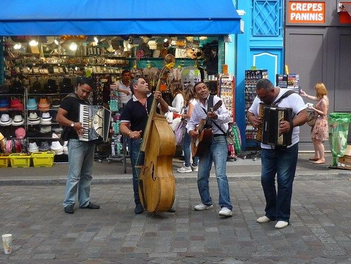
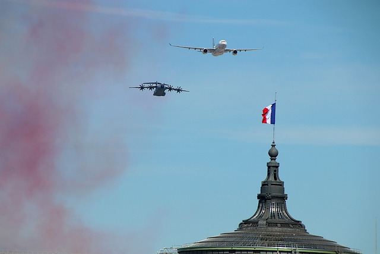
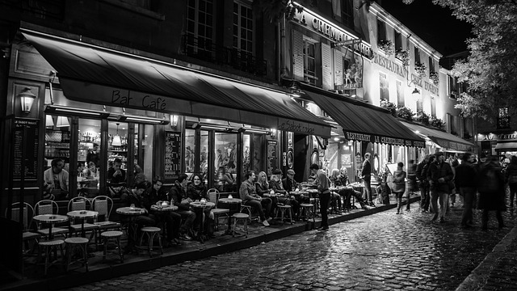
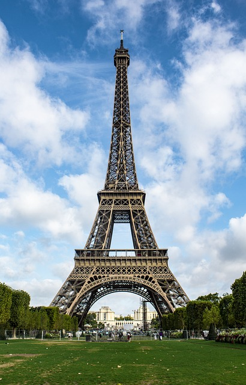
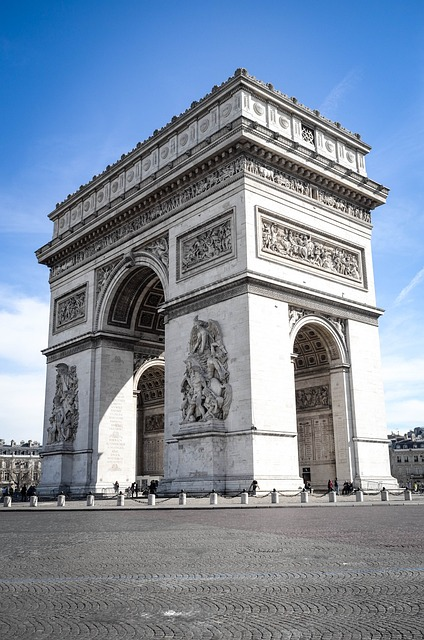

Paris, La Ville de l'Amour!
Histoire
Imaginez-vous transporté dans le temps, à une époque où les ruelles de Lutèce(ancien Paris) résonnaient des rires des marchands et du clapotis des vagues de la Seine. Le parfum envoûtant des épices et des fruits exotiques flotte dans l'air alors que les étals colorés des marchés attirent les passants avides de découvertes.
Au fil des siècles, Paris s'éveille tel un papillon sortant de sa chrysalide. Les remparts médiévaux cèdent la place à des avenues majestueuses, bordées d'arbres élancés et de bâtiments imposants. Les ruelles tortueuses se transforment en boulevards animés, où les cafés bruissent d'activité et où l'on croise des artistes en quête d'inspiration.
Sous le règne fastueux de Louis XIV, Paris devient le joyau de la couronne, un lieu de plaisirs et d'extravagance où la noblesse se livre à des fêtes somptueuses dans les salons dorés du Palais de Versailles. Mais dans les ruelles étroites de la ville, les murmures de révolte se font de plus en plus insistants, annonçant l'aube d'une ère nouvelle.
Et puis, c'est l'explosion de la Révolution ! Les pavés volent dans les airs, les barricades s'élèvent comme des monuments à la liberté, et le peuple de Paris rugit sa colère contre l'oppression. Sur la place de la Bastille, le symbole de la tyrannie tombe sous les coups des révolutionnaires, libérant un souffle de liberté qui balaye la ville.
Au 19ème siècle, Paris devient le théâtre d'une effervescence artistique sans précédent. Dans les cabarets enfumés de Montmartre, les peintres bohèmes célèbrent la beauté de la vie avec des coups de pinceau audacieux, tandis que dans les salons littéraires de la Rive Gauche, les écrivains enfiévrés donnent naissance à de nouvelles idées révolutionnaires.
Puis, c'est la Belle Époque, une période de fêtes et de frivolités où la vie nocturne de Paris atteint son apogée. Les danseuses tournoient sous les lumières étincelantes du Moulin Rouge, les élégantes défilent le long des Champs-Élysées, et les artistes se rassemblent dans les cafés animés de Montparnasse pour discuter de l'avenir de l'art et de la société.
Mais Paris ne se contente pas de briller dans la lumière éclatante de la Belle Époque. Au cours du 20ème siècle, la ville affronte les horreurs de la guerre, résistant avec courage à l'occupation nazie et se reconstruisant avec détermination après les ravages de la Seconde Guerre mondiale.
Aujourd'hui, Paris demeure une ville vibrante et captivante, où le passé et le présent se mêlent dans un tourbillon d'activité et de créativité. Des quais animés de la Seine aux sommets scintillants de la Tour Eiffel, chaque coin de la ville raconte une histoire, un récit envoûtant qui captive et séduit tous ceux qui ont la chance de le découvrir.

La Fête de la Musique
La Fête de la Musique, célébrée le 21 juin, est une véritable institution en France et à Paris en particulier. Cette fête annuelle a été créée en 1982 par le ministère de la Culture français pour célébrer la musique sous toutes ses formes et pour encourager la pratique musicale amateur et professionnelle.
À Paris, la Fête de la Musique transforme la ville en un immense festival de musique en plein air, où les rues, les places, les parcs et même les musées se transforment en scènes vivantes. Des milliers de musiciens amateurs et professionnels se produisent dans tous les genres musicaux, du rock au jazz en passant par la musique classique, la chanson française, le hip-hop, la musique électronique et bien d'autres encore.
Les rues de Paris résonnent de mélodies envoûtantes alors que les passants se laissent emporter par la musique et la convivialité de l'événement. Des scènes officielles sont installées dans des lieux emblématiques comme le parvis de l'Hôtel de Ville, la place des Vosges, la place de la Bastille et le bassin de la Villette, tandis que des centaines d'autres concerts spontanés éclosent dans les quartiers, les bars et les cafés de la ville.
La Fête Nationale
La Fête Nationale, également connue sous le nom de Bastille Day, est l'une des célébrations les plus emblématiques de Paris. Elle a lieu le 14 juillet et commémore la prise de la Bastille lors de la Révolution française, un événement majeur qui symbolise la lutte pour la liberté et l'égalité.
À Paris, la Fête Nationale débute généralement par un impressionnant défilé militaire sur les Champs-Élysées, présidé par le président de la République française et suivi par des milliers de spectateurs enthousiastes. Les troupes, les véhicules militaires et les avions survolent l'avenue emblématique dans un spectacle impressionnant de puissance et de tradition.
La Fête Nationale à Paris est une occasion de célébrer l'histoire et les valeurs de la France, mais c'est aussi une fête joyeuse et conviviale où les gens se rassemblent pour partager des moments de joie et de camaraderie. C'est un jour où l'esprit de solidarité et de fraternité règne dans les rues de la capitale française, rappelant aux habitants et aux visiteurs la force et la résilience du peuple français.


La Nuit Blanche
La Nuit Blanche est une célébration annuelle de l'art contemporain qui transforme Paris en un vaste musée à ciel ouvert pendant une nuit entière. Organisée chaque année au début du mois d'octobre, cette manifestation culturelle invite les Parisiens et les visiteurs à découvrir la ville sous un nouvel angle, à travers des installations artistiques éphémères, des performances envoûtantes et des expositions surprenantes.
Lors de la Nuit Blanche, des artistes du monde entier investissent les rues, les places, les parcs et les monuments de Paris, créant des œuvres originales qui interagissent avec l'espace urbain et invitent le public à réfléchir, à s'émerveiller et à s'interroger. Des projections lumineuses spectaculaires transforment les façades des bâtiments historiques, des sculptures monumentales surgissent dans des lieux insolites, et des performances théâtrales et musicales captivent les spectateurs jusqu'au petit matin.
La Tour Eiffel
La Tour Eiffel, monument emblématique de Paris, s'élève majestueusement au-dessus de la ville lumière. Avec ses lignes élégantes et sa structure en fer forgé, elle attire les regards et capture l'imagination des visiteurs du monde entier. Symbole de progrès et d'ingénierie audacieuse, elle offre depuis ses plateformes d'observation des vues panoramiques incomparables sur la capitale française. La Tour Eiffel incarne la grandeur et la beauté de Paris, et demeure un incontournable de toute visite dans la ville des amoureux.


Le Louvre
Le Louvre, joyau culturel de Paris, est l'un des plus grands et des plus prestigieux musées du monde. Niché au cœur de la ville, cet ancien palais royal abrite une collection exceptionnelle d'œuvres d'art, allant de l'Antiquité à nos jours. À travers ses vastes galeries et ses somptueux salons, les visiteurs peuvent admirer des trésors inestimables, tels que la mystérieuse Mona Lisa, la majestueuse Vénus de Milo et l'imposante Victoire de Samothrace. En plus de sa riche collection permanente, le Louvre propose également des expositions temporaires fascinantes, offrant ainsi aux visiteurs une expérience culturelle inoubliable au cœur de la capitale française.
Les Champs-Élysées et l'Arc de Triomphe
Les Champs-Élysées et l'Arc de Triomphe forment l'une des avenues les plus célèbres et emblématiques de Paris, incarnant à la fois l'élégance, le prestige et l'histoire de la ville. Les Champs-Élysées, bordés de boutiques de luxe, de cafés élégants et de théâtres prestigieux, offrent une promenade élégante au cœur de la capitale française. Cette avenue emblématique est le lieu de nombreux événements culturels et festifs tout au long de l'année, y compris le défilé du 14 juillet lors de la Fête Nationale.
